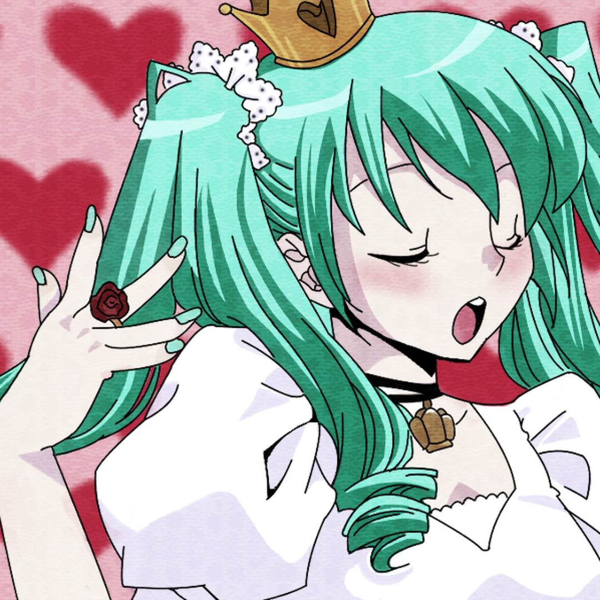
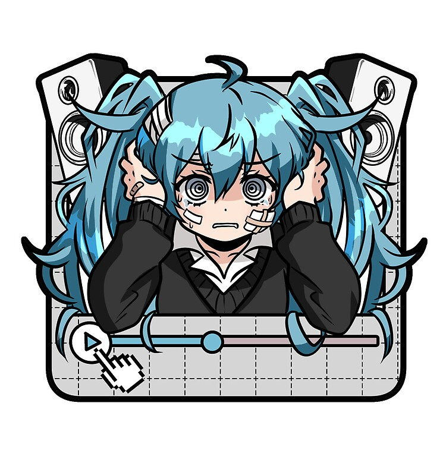
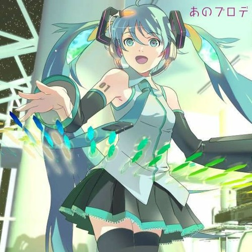
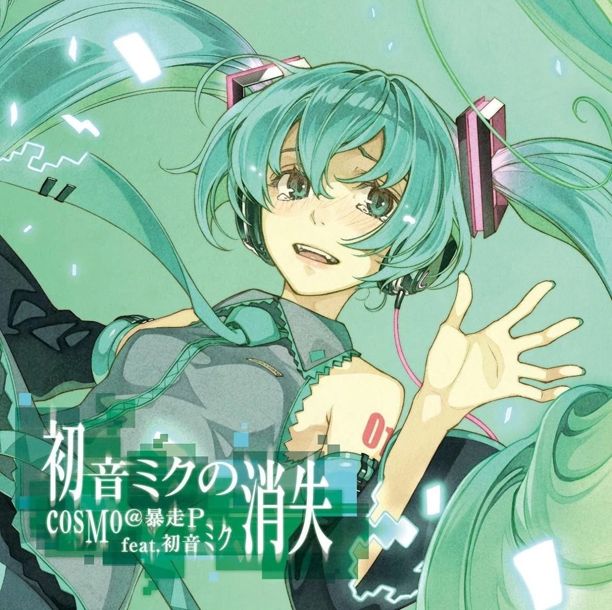

Algumas músicas dela!




The Disappearance of Hatsune Miku
Uma das músicas mais intensas e emocionais de Miku, por cosMo@Bousou-P.
Ouvir no YouTube



Uma das músicas mais intensas e emocionais de Miku, por cosMo@Bousou-P.
Ouvir no YouTube